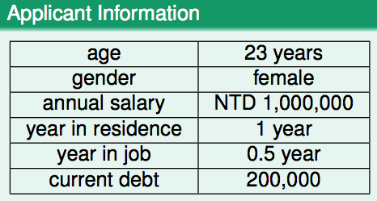
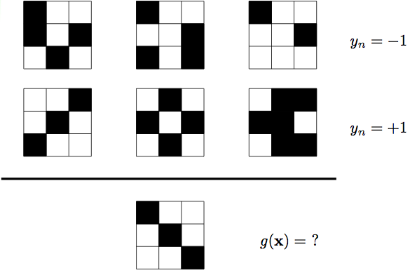
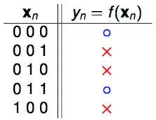
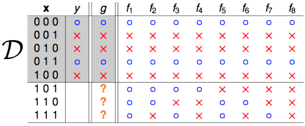
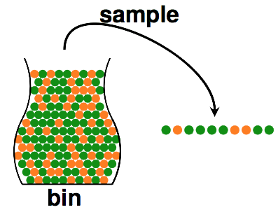
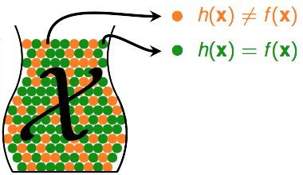
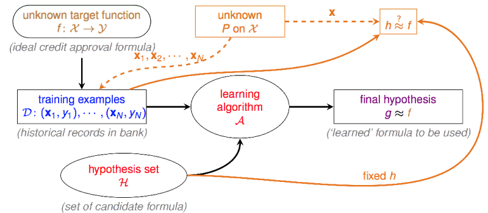
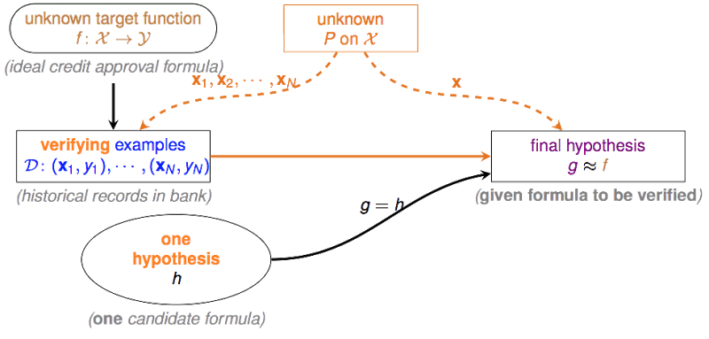

机器学习的基础架构 (Learning From Data)
银行在决定是否要通过贷款申请人的授信请求前，会根据申请人的资料对其进行风险评估，(通常银行会为其计算信用评分)，申请人状况符合银行要求时，银行通过其申请，反之则婉拒。那么银行凭借什么来判断申请人将来是否会违约呢？通过银行之前的信用贷款记录，这些记录中，有些客户发生了违约行为，其他则表现良好，银行从这些违约与非违约的记录中learning到了一些规律，然后利用这些规律，来对新申请人的违约风险进行估计。因此信用评估模型就是一个learning的问题，那么我们该如何使用历史数据做好learning呢？
下面这张图描述了learning的基础架构：

，其中表示输入空间，譬如下图中第一列
(age, gender, annual salary, year in residence, year in job, current debt)为输入空间(6维)，而右边一列
(23 years, female, NTD 1,000,000, 1 year, 0.5 year, 200,000)为该输入空间下的一个向量，每位贷款申请人对应该空间下的一个向量。 
表示输出空间，在二元分类中，输出空间是一个1维的取值为+1或-1的空间 ，可以用-1表示非违约，+1表示违约。 是未知的真理，是事物运转的规律，假如我们可以拥有，我们就可以知道一个人到底会不会发生违约行为。但是这个是不可知的，我们无法窥探其中运行的原理(函数内部构造)，我们唯一知道的是在我们已知的历史数据当中的运行情况(把当做输入，把当做的输出)，learning要作的事情，就是找一个在中运行情况与类似的函数，这个函数对于相同的输入，会有与相同的输出，并且希望在之外，也就是我们未知的世界，我们找的这个函数的运行情况还能与接近。为训练集，该训练集有N笔数据，每笔数据由某申请人在中的向量和与其对应的类别构成。
，hypothesis set是一个由有限个或无限个方程组成的集合，算法只能从的范围内挑选方程。
，是一个学习算法，它能够帮助我们在中找到一个与的判断最接近或足够接近的一个方程。当然我们可以说穷举法是一种学习算法，当当中candidate formula数量不多时，我们可以用穷举法来寻找。但往往candidate formula数量很大甚至是无穷的，我们就需要设计一个比较好的算法，他能够在较短时间找到我们想要的那个方程。
，final hypothesis，即从中挑选的和判断最接近的那个方程。
说到底，learning在干的事情，就是从hypothesis set里面挑一个“长”的最像的方程，注意前面我的用词是用"它的判断接近"，并不是说和结构很类似，(记住永远是unknown的)，而是说他们的判断很一致，即。并且这里谈到的接近，是针对训练集而言的，之外的数据他们能否表现一致，这才是我们最应该关心的问题，如果之外他们也能够表现一致，说明我们learning的还不错，我们有从上面学到东西。这时候换个角度来想，能不能有某个理论，来保证我们的与在之外也能有差不多的接近程度？
Learning真的可行吗？ (Is Learning Feasible?)

图片前两行为training set，对于第一行的所有样本，有，对于第二行的所有样本，有，那么我们能不能通过这6笔数据来猜测一下是长什么样的呢？同学1和同学2利用各自的学习方法分别给出了自己的
- 同学1训练出来的g：
- 同学2训练出来的g：
对于training set中所有样本，有，即两个与的表现是一致的，似乎可以认为他们都"学"到了东西，但是对于测试样本来说。真实的我们无法知道，如果他们中的某一个人在所有非训练的资料中也和表现一致，我们才能说他们当中某个人真的学到了东西。但在目前这种情况下，我们无法说同学1学到了东西还是同学2学到了东西。
让我们再来考虑一个简单的二元分类问题。，

为何要举这么简单的例子呢？因为前面我们说到真实的是我们无法知道的，但在上面这个简单的例子中，我们有办法把所有可能的全部列举出来。

可能产生这样的的只可能有8种并且只有其中的1个是正确的，这样一来，虽然我们可以保证我们的在上的判断和真实的一致，但我们无法保证在之外也同样如此。那么这里便值得怀疑一下机器学习的可行性，机器学习到底可不可行？
推断未知的世界(Inferring Something Unknown)
我们知道在前面简单版的learning问题中，由于我们无法推断之外事情，因此learning不可行。但在其他场景中，我们能否利用来推断以外的事情呢？在统计推断中，我们可以利用样本的统计量(statistic)来推断总体的参数(parameter)，譬如使用样本均值来估计总体期望。假设你想了解某一批大米(1000包)的平均重量，可以通过随机抽样抽取一定数量的样本(20包)，用这20包大米的平均重量估计这1000包大米的平均重量，虽然二者并不一定会完全相等，但也不会相差太大，并且你的样本量越大，你得到的统计量与参数之间的误差会越小。在这个例子中，未知的980包大米的平均重量与我们知道的20包大米的平均重量是有关联的，因此我们似乎可以通过来推断之外的东西。下面来一个摸球的例子：

- bin，即总体，假设，。但我们无法知道到底多大。
- sample，即样本，数量为，在抽出的个小球中，orange的比例为，green的比例为，数一数就能算出
问题来了，这个能不能在一定程度上代表了。也许不能，因为即使bin中orange占多数，也可能发生这样的事情，你抽了10个小球出来但全是green的。但这种事情发生的可能性大吗？不大，并且如果我们有更多的样本(抽出更多的球)，则这种事情发生的可能性会越来越小。在概率论中，可以用Hoeffding's Inequality来描述上面那件事情的概率：
注：是我们的容忍度，当与的差别小于容忍度时，我们称与“差不多”(PAC, probably approximately correct)，当与差别大于容忍度时，我们称与"差很多"。“差很多”这件事发生的概率越小越好，最大不会超过右边。
上面这个不等式中，控制右边数值大小的只有和，减小(要求降低)与(样本增加)增大都能够使坏事情发生的概率的上限减少。当上限足够小的时候，我们可以说，sample中orange的比例和bin中orange的概率差不多，如果sample中的orange比例少，则bin中的orange的比例也会比较少。
我们可以把learning与抓球这件事结合起来。

还记得之前说过的吗？他代表未知的真理，而是属于hypothesis set 的某一个方程。对于某一个向量：
- 如果，即他们判断不一致，我们记第n个小球是orange
- 如果, 即他们判断是一致的，我们记第n个小球是green
利用之前抓小球的逻辑，我们可以利用sample中orange的比例来推断总体中orange出现的概率，则同样的，我们可以利用sample中的比例来推断总体中的概率。这里表示一个error，则我们可以称 在sample中出现error的比例为 (in-sample-error)，在总体中出现error的概率为 (out-of-sample-error)。则对于 来说：
，表示数学期望
利用Hoeffding's Inequality，我们可以写成：
简单说来，当右边这个“上界”足够小时，我们可以说在sample中的表现(错误率)与在总体中的表现是差不多的。

注意这里仅仅是说，对于一个固定的 (fixed )而言，会与很接近，这种情况能说是一种好的learning吗？当然不能，因为如果很大，则也大，这样是没有意义的。因此我们的算法要能够自由的从中挑选方程，我们把挑选出的最好的称为 (final hypothesis)。因此这里就需要添加一个验证流程(Verification Flow)，这个流程使用历史数据来判断某个够不够好。

不幸的状况 (Bad Data)
前面说到，要能够自由的在中挑选它认为最适合的方程，因此这个最适合的方程就有可能是中的任何一个，有可能是，有可能是，中任意一个都有可能成为。但我们知道，我们的只是来自于总体的一个样本 (sample)，既然是sample，就一定会存在抽样误差。譬如你想知道一枚硬币抛出正面的概率是多少，于是你扔了5次，有一定的可能你连续扔了5个正面出来，这时候说抛出正面的概率是1，这样对吗？这当然是行不通的，因此你扔的这5次硬币，就是一个bad sample。凡是由于抽样误差所造成样本分布与总体分布相差很大的样本，我们都可以称之为bad sample。
learning同样会遇到bad sample的麻烦。比如实际上是个很好的方程，本来能够成为的，但是由于抽样误差，碰到了bad sample，造成很大，最终没有选择它。又比如是个不好的方程，碰到了bad sample，碰巧又很小，导致错误得选择了它作为。因此每个都有可能遇上bad sample的烦恼。对于任意一个来说，bad sample会造成他们的。
因此只要中任意个遇上bad sample，我们的在挑选方程时就会遇到麻烦，我们的learning就有可能不太好。那么bad sample发生的概率有多大呢？
由此看出，learning得好不好，还与里面的方程数量有关。当是有限的时候，数据量越大，发生bad sample的可能性越低。同理如果太大，我们也越容易遇到bad sample。
总结 (Summary)
从概率论的角度出发，可以证明learning的确是可行的。因此，只有当和的判断很接近的时候，我们才能说learning是可行的。可行之余，倘若很大，这样的learning也没有太大意义，因为你的这个在sample中表现不好，则他在out-of-sample中表现也不大可能会好。我们把中表现最好(最低)的那个方程选出来，记为。当然如何定义“最好”，以及如何去寻找“最好”，则是后面的内容。